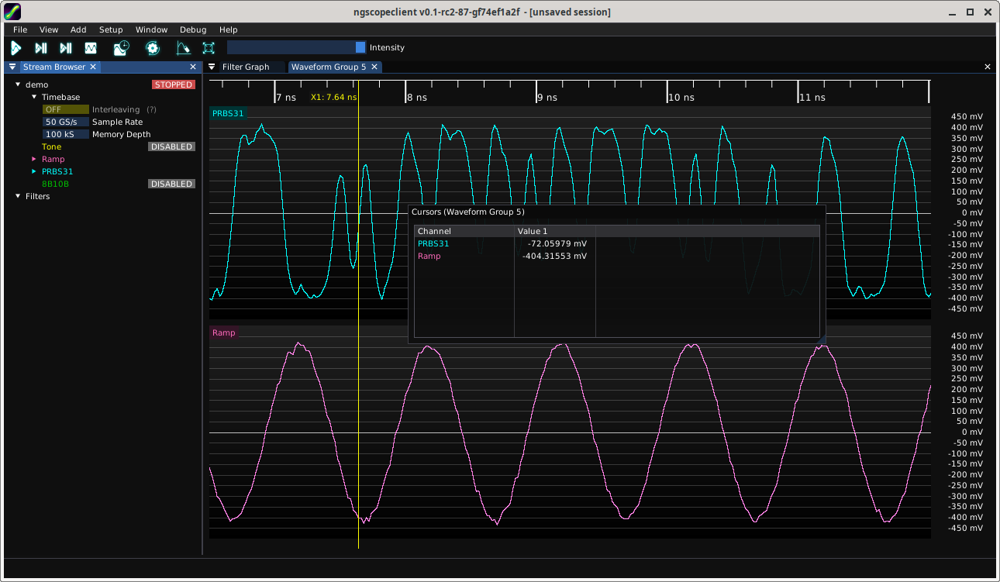
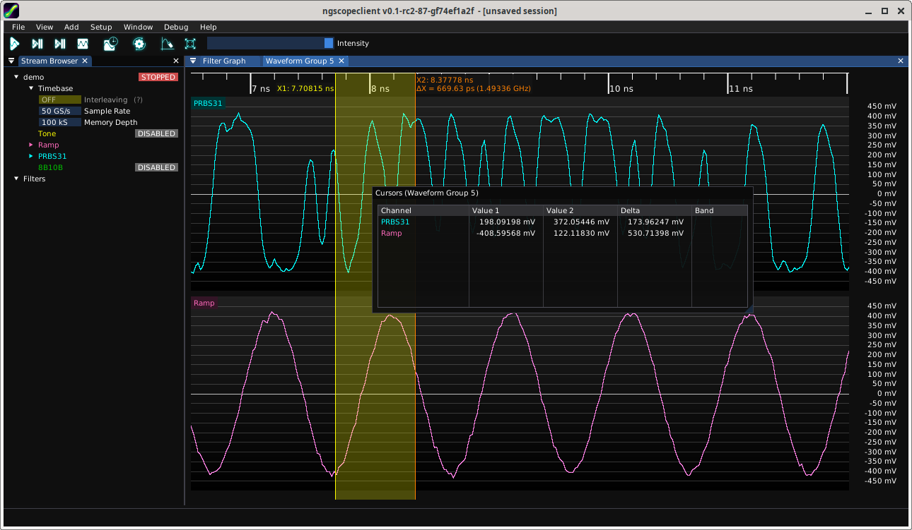
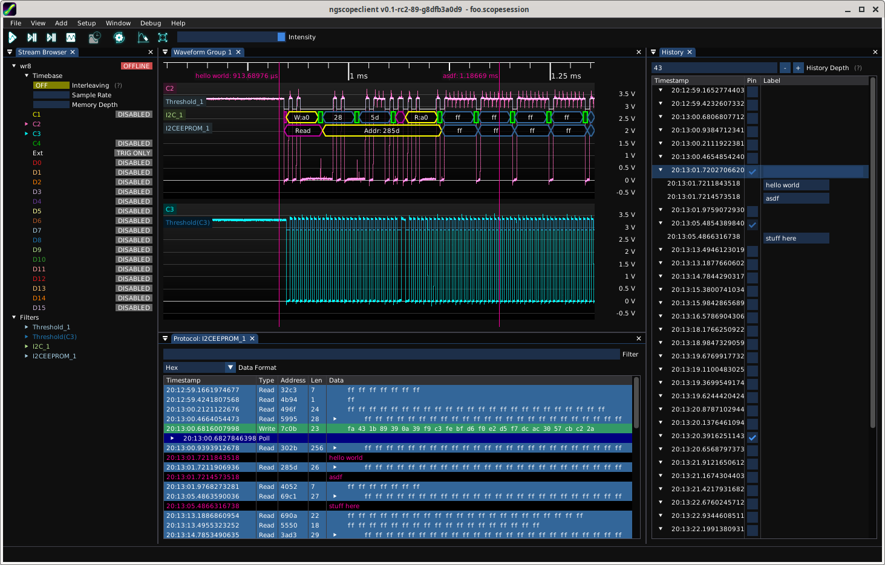
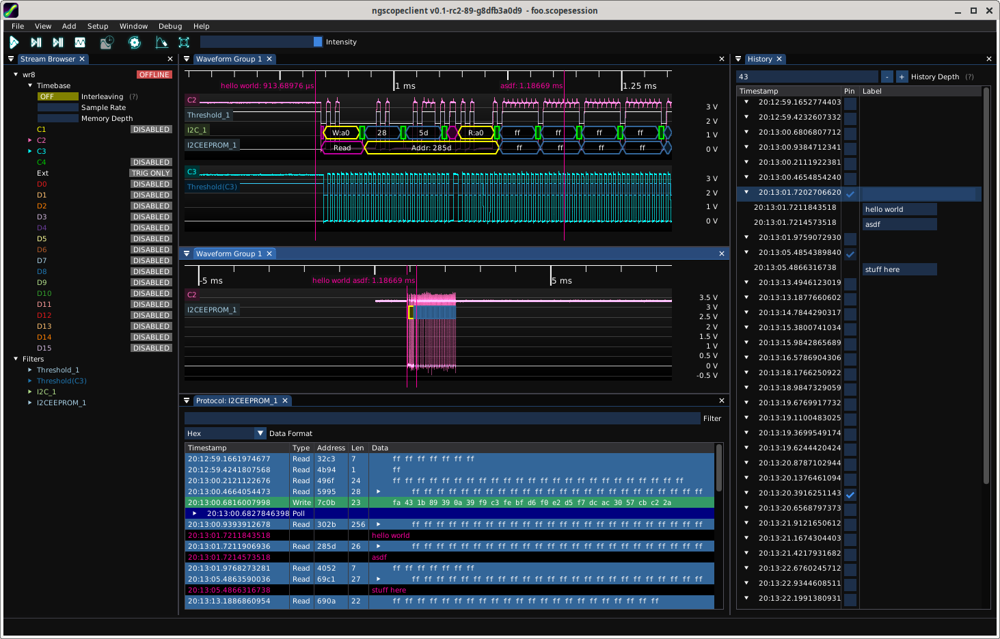

A waveform view is a single 2D plot area within a waveform group.
Arbitrarily many channels of waveform or protocol data may be displayed within a single view, however all analog channels within a single view share the same Y axis unit, gain, and offset. Digital channels and protocol decodes can be overlaid on analog waveforms or displayed in their own dedicated views.
2D density plots, such as eye patterns, spectrograms, and waterfall plots, cannot share a waveform view with any other channel.
Scrolling with the mouse wheel adjusts the horizontal scale of the current waveform group, zooming in or out centered on the position of the mouse cursor.
The plot area shows the waveform being displayed. The horizontal grid lines line up with the voltage scale markings on the Y axis. If the plot area includes Y=0, the grid line for zero is slightly brighter.
The waveform is drawn as a semi-transparent line so that when zoomed out, the density of voltage at various points in the graph may be seen as lighter or darker areas. This is referred to as “intensity grading".
Each waveform view has its own Y axis scale, which is locked to the ADC range of the instrument.
Channel gain may be configured by scrolling with the mouse wheel, and offset may be adjusted by dragging the scale with the left mouse button. Pressing the middle mouse button on the Y axis will auto-scale the vertical gain and offset to show the full span of all channels in the view with 5% of vertical margin.
If a left-pointing arrow (as seen in Fig. 9.2) is visible, one of the channels in the view is selected as a trigger source. Click on the arrow and drag up or down to select the trigger level. Some trigger types, such as window triggers, have two arrows for upper and lower levels.

The top left corner of each waveform view contains a legend with a label for each channel being displayed in the view.
Mousing over the channel name displays a tooltip (Fig. 9.3) with some helpful information about the waveform. The exact information displayed in the tooltip depends on the type of data being displayed, for example analog waveforms display sample rate and record length while eye patterns display the number of integrated UIs.

The label may be dragged with the left mouse button to move the waveform to a different location. Dragging to the left or right edge of a waveform view, or the top or bottom edge of the topmost or bottommost waveform in a group, will split the group. Dragging to the left half of another waveform view, whether in the same group or a different group, moves the channel to that view. Dragging to the right half of the view adds a new view within the same group containing only the dragged waveform.
Double-clicking the label opens the channel properties dialog (Fig. 9.4). As with all dialogs in ngscopeclient, the properties dialog may be left in the default floating state or docked.


The properties dialog will always contain an editable nickname for the channel, a color chooser, and some basic information about the instrument channel or filter block sourcing the data. Additional settings may be available but will vary depending on the type of instrument or filter. In Fig. 9.4, the left dialog shows a direct coaxial input to a Pico PicoScope 6824E, which has variable ADC resolution. The center dialog shows an active differential probe with auto-zero capability, connected to a Teledyne LeCroy SDA816Zi-A which has a mux for selecting between two input connectors for each channel. The right dialog shows a FIR filter with several configurable settings.
Right clicking on the label opens a context menu. The context menu allows setting of persistence mode, deleting the waveform, and creating new filter blocks or protocol decodes with the selected waveform as an input.
Cursors are movable annotations which can be used to temporarily mark points of interest in a waveform and examine data values. Markers are similar to cursors but intended for long-term marking of specific points in a single acquisition and do not provide readout functionality.
A vertical cursor describes a point in time relative to the start of the acquisition. When new waveforms are acquired, the cursor remains at the same offset in the new waveform. When the view is panned horizontally, the cursor scrolls with the waveform and remains at the same point in the waveform.
To add a vertical cursor (Fig. 9.5), right click in the view and select a single or double cursor from the Cursors | X Axis menu.
Vertical cursors are attached to a waveform group and will span all views within the group. Multiple groups may have independent vertical cursors active simultaneously.


To place a single cursor, click on the waveform at the desired location. To place double cursors, click at the starting location to place the first cursor then drag to the ending location and release the mouse to place the second cursor. Once placed, either cursor can be moved by clicking on it and dragging to the new location.
In the timeline each cursor will display its X-axis position. If both cursors are active, the delta between them is shown. If the X axis uses time units, the frequency with period equal to the cursor spacing is also shown.
When a cursor is active, a dockable pop-up dialog appears displaying the value of each waveform in the group at the cursor location. If two cursors are active, both values as well as the difference between them is shown (Fig. 9.6)
A marker is a named location in absolute time intended for marking specific events (such as protocol packets or glitches) which may need to be re-examined in the future. When new waveforms are acquired, the marker remains attached to the same point in the old waveform and will disappear from view until the old waveform is re-loaded from the history window. In Fig. 9.7, two of the three markers are visible while the third is in a different waveform.
Unlike vertical cursors, which are local to a single waveform group, cursors are global and will appear at the same timestamp in all waveform groups. This allows an event of interest to be examined in detail in one view, while a different view provides a global overview of the entire acquisition or examines another event (Fig. 9.8).
Creating a marker automatically pins the active waveform so it will not be removed from history as new data is acquired. The waveform cannot be un-pinned unless all markers are deleted first, or the waveform itself is manually deleted.
Newly created markers will have default numeric names such as M1, M2, etc. This name can be changed from the history window.

